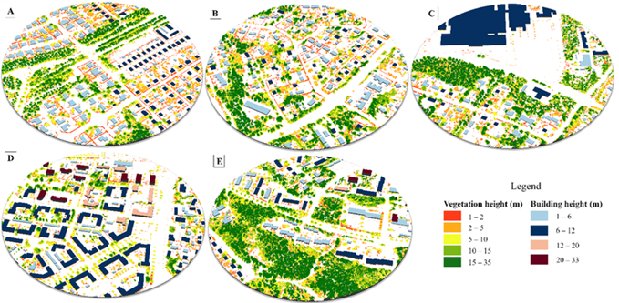

Dr. Sonali Sharma
I am a Geospatial Analyst and Urban ecologist actively seeking opportunities to deliver nature-positive and climate resilient solutions at the intersection of Earth observation, GeoAI and Environmental planning. With 7+ years of transforming complex 2D & 3D spatial data into planning-relevant insights that cities, regions and nature need, I have built geospatial workflows connecting LiDAR, high resolution land cover and socio-economic data for urban and nature environments.
I hold a PhD in Environmental Sciences and bring international work experiences across India, Germany, and Finland — always aimed at synthesizing spatial evidence for planning and policy. I am ready to bring my spatial analytics expertise, interdisciplinary background, and cross-cultural adaptability to organisations where geospatial intelligence can drive climate adaptation, biodiversity-sensitive and nature-based solutions planning.
Interests
- Earth observation & satellite data science
- Environmental & urban planning
- LiDAR & 3D urban structure
- Remote sensing & GIS analytics
- GeoAI & deep learning for Geospatial
- Ecosystem service modelling
- Green infrastructure & nature-based solutions
- Landscape ecology
- Biodiversity & urban ecology
- Carbon accounting & climate reporting
- Reproducible geospatial workflows
- Science-policy interface
Work Experiences
Postdoctoral Researcher
GIS workflow design and automation integrating LiDAR and high-resolution land cover data, reducing processing time by 70%. Reproducible machine learning pipeline development for 3D urban and nature spatial analysis. Spatial analysis of bird biodiversity data, linking species occurrence with urban structural heterogeneity to derive planning-relevant insights. Interdisciplinary project coordination with the Finnish Environment Institute, delivering actionable map products and scientific outputs. Stakeholder engagement and findings presentation at workshops and conferences.
PythonRLiDARHPCQ/ArcGISMachine learning 3D Urban typologyHybrid associationsStakeholder engagementScientific reportingUrban biodiversity planning
Visiting Doctoral Researcher DAAD Fellow
DAAD Bi-national Fellowship recipient. Led research on future plausible urban growth and climate change scenarios and their implications on ecosystem services. Worked with German research teams and presented at international conferences focused on sustainability and geospatial methods.
ArcGISPythonRGoogle Earth EngineIPCC climate scenariosUrban growth modelling
Doctoral Researcher (PhD)
Modelled urban ecosystem services — soil erosion, flood regulation, heat regulation, and carbon sequestration in two Himalaya landscapes. Integrated multi-source datasets (climate, land cover, remote sensing) for urban growth and heat island studies. Mentored junior researchers in GIS workflows and data processing.
ArcGISPythonRGoogle Earth EngineEcosystem ServicesWatershed modellingSpatio-temporal assessmentSocio-economic dataHeat island mapping
Projects

Automated Urban Structure Inventory from LiDAR
Urban green planners spends hundreds of Euros on manual tree surveys. This pipeline turns a single open-access LiDAR file into a complete complete urban structure inventory — 872 individual trees mapped with locations, heights, and crown extents, alongside wall-to-wall building heights — in one reproducible notebook run. Ready to feed directly into green infrastructure audits, urban heat mitigation plans, shadow modelling or carbon accounting workflows.

Wall-to-Wall Carbon Mapping from LiDAR
Municipal climate accounts and voluntary carbon markets demand spatially explicit, auditable carbon estimates — not averages extrapolated from field plots. This pipeline goes from a single open-access LiDAR tile to a wall-to-wall carbon stock map at individual tree resolution across an urban forest site in Helsinki. Every tree counted, every tonne traceable — and fully scalable to landscape-wide coverage with additional tiles.

A Pixel-Level Validation
LiDAR is accurate but not freely omnipresent yet. Deep learning models trained on aerial imagery promise a cheaper, scalable alternative — but do they actually hold up? This notebook delivers a pixel-level validation of GeoAI’s SSL-pretrained canopy height model against airborne LiDAR as ground truth across a Helsinki urban neighbourhood.

A Pixel-Level Validation
LiDAR is accurate but not freely omnipresent yet. Deep learning models trained on aerial imagery promise a cheaper, scalable alternative — but do they hold up in dense forest where the canopy is closed and individual crowns are harder to resolve? This notebook delivers a pixel-level validation of GeoAI’s SSL-pretrained canopy height model against airborne LiDAR as ground truth across a Helsinki forested site.

3D urban-green typologies — Nordic residential areas
Not all residential areas relate to green infrastructure the same way — and planning that ignores this distinction misses where and what to investment is most needed. This project explored five LiDAR-based urban-green typologies. A direct planning tool for identifying which housing types need which vegetation layer — shrub, sub-canopy, or canopy — and where. View full project →

Urban Residential Typology — Built-Vegetation Hybrid Associations
A scalable residential typology of built-vegetation hybrid associations across the Helsinki Metropolitan Area — combining transfer learning with building and vegetation height information at planning scale. Can GeoAI help design better cities by identifying green infrastructure needs at planning scale? Do green infrastructure needs fundamentally differ between detached housing and high-rise flats? Which housing types need investment and what vegetation layers — shrub, sub-canopy, or canopy — are missing?
Code releasing on paper acceptance

Spatio-temporal LULC assessment — Dharamshala & Pithoragarh (2002–2021)
Unplanned urban growth in mountain cities rarely makes headlines. Two decades of urbanisation-induced land cover change mapped at species-level resolution across Dharamshala and Pithoragarh using open-source satellite data. Quantified what, how much, and where natural and semi-natural land units were lost — directly actionable for mountain city planners.

What could the Western Himalayan landscapes look like by 2040?
Future Studies: Urban growth scenarios
Unplanned growth in mountain cities rarely follows a single path — but planners need to see all of them. Three plausible futures — Business As Usual, Ecosystem Protection, Development-First. Spatial maps designed for stakeholder deliberation: What does each plausible path look like on the ground by 2040?

Past, Present & Future of Ecosystem Services — Western Himalaya
Flood regulation, carbon sequestration, soil erosion, and heat mitigation — spatio-temporally quantified, hotspot-mapped, and projected under three combined planning and climate change scenarios across two Himalayan urban landscapes. Which areas are crucial for each ecosystem service? Where can development expand without compromising ecosystem resilience?

Do smaller satellite towns run hotter than the planned city next door?
Urban Heat Island — Chandigarh & Satellite Towns (1992–2019)
Counter-intuitive finding: smaller satellite towns had worse heat islands than the larger planned city. Green space distribution matters more than total area — direct implications for satellite town masterplanning across South Asia.
Publications
Peer-reviewed (6)
Dennis, M., Huck, J., Holt, C., McHenry, E., Andersson, E., Sharma, S., and Haase, D. (2026). In search of Schrödinger’s patch: A functional approach to habitat delineation. Landscape Ecology, 41, 36.
Dennis, M., Huck, J., Holt, C., McHenry, E., Andersson, E., Sharma, S., and Haase, D. (2026). Beyond the patch: Leveraging the notion of realized habitat in fragmentation-biodiversity research. Landscape Ecology, 41, 37.
Sharma, S., Joshi, P.K., and Fürst, C. (2022). Exploring multiscale influence of urban growth on landscape patterns of two emerging urban centres in the Western Himalaya. Land, 11, 2281.
Sharma, S., Joshi, P.K., and Fürst, C. (2022). Unravelling net primary productivity dynamics under urbanization and climate change in the Western Himalaya. Ecological Indicators, 144, 109508.
Sharma, S., Sharma, M., Anees, M.M., and Joshi, P.K. (2020). Longitudinal study of changes in ecosystem services in a city of lakes, Bhopal, India. Energy, Ecology and Environment, 6, 408–424.
Sharma, S., Nahid, S., Sannigarhi, S., Sharma, M., Anees, M.M., Sharma, R., Shekhar, R., Joshi, P.K., Basu, A.S., Pilla, F., and Basu, B. (2020). A long-term and comprehensive assessment of urbanization-induced impacts on ecosystem services in the capital city of India. City and Environment Interactions, 7, 1-12, 100047.
Under review (2)
Sharma, S., Maija, T., and Andersson, E. (n.d.). Situating private urban green spaces — using transfer learning to characterise urban landscapes. Landscape and Urban Planning.
Sharma, S., Andersson, E., and Dennis, M. (n.d.). Qualifying and navigating urban heterogeneity for biodiversity. Ecography.
In progress (2)
Sharma, S., Andersson, E., and Dennis, M. (n.d.). How scales matter? Urban ecological qualities for birds. Ecosphere.
Sharma, S., Joshi, P.K., and Fürst, C. (n.d.). Rampant or ecological? Urban growth pathways in Himalaya. Ecological Indicators.
Contact
If you are working on something where cities and their nature, forest, and spatial data intersect & feel I could be a good addition to your team/projects - I would love to connect.
📧 ssonalipduoh@gmail.com · LinkedIn · +49 152 160 44085
📍 Goslar, Germany · Open to remote and on-site roles in Germany | across Europe and beyond.
This portfolio is actively growing — new projects and notebooks added regularly.